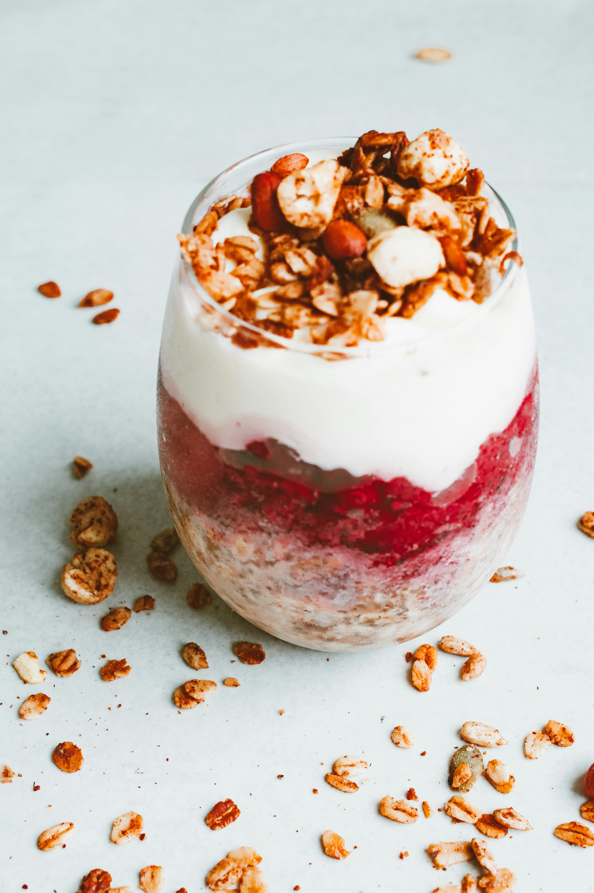

Home
Chicken Fried Chicken

Description
A yogurt parfait is a layered dessert or breakfast of yogurt, fruit, and
granola (or other crunchy toppings) served in a glass, known for being a
quick, healthy, and customizable treat.
Ingredients
- 2 cups vanilla yogurt
- 1 cup granola
- 8 blackberries
Steps
-
Layer 1 cup yogurt, 1/2 cup granola, and 4 blackberries in a large
glass; repeat layers.